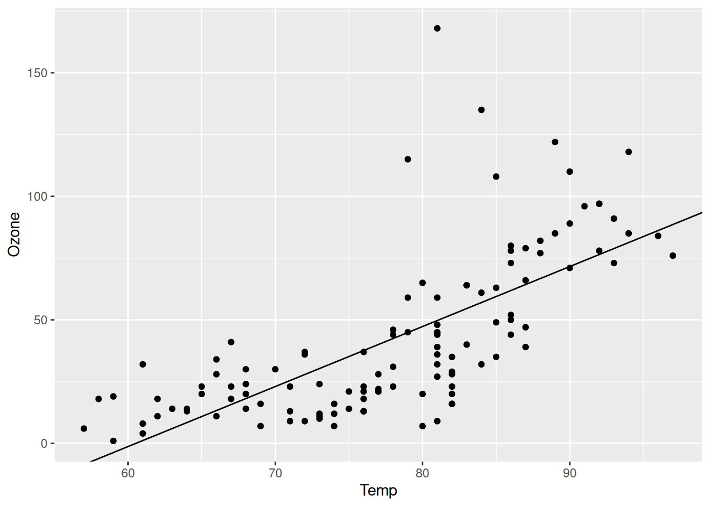
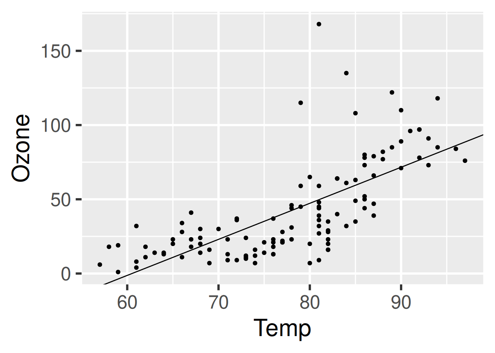

├── _targets.R
├── data.csv
├── R/
│ ├── functions.Rtargets
TL;DR
These are go-to targets command/functions:
targets::tar_make() # Build all targets (i.e., run everything)
targets::tar_manifest() # Print out the current target list
targets::tar_source() # Load all R scripts (from the 'R' subdirectory by default;
# change with (files = "[...dir...]")
targets::tar_read(...) # Print out content of target (specified by name)
targets::tar_viznetwork() # Visualize target graph (DAG)A walkthrough to get started
The following targets walkthrough was copied verbatim from: https://books.ropensci.org/targets/walkthrough.html
This chapter walks through a short example of a
targets-powered data analysis project. The source code is available at https://github.com/wlandau/targets-four-minutes, and you can visit https://rstudio.cloud/project/3946303 to try out the code in a web browser (no download or installation required). The documentation website links to other examples. The contents of the chapter are also explained in a four-minute video tutorial:
About this example
The goal of this short analysis is to assess the relationship among ozone and temperature in base R’s
airqualitydataset. We track a data file, prepare a dataset, fit a model, and plot the model against the data.File structure
The file structure of the project looks like this.
data.csvcontains the data we want to analyze.
Ozone,Solar.R,Wind,Temp,Month,Day
36,118,8.0,72,5,2
12,149,12.6,74,5,3
...
R/functions.Rcontains our custom user-defined functions. (See the functions chapter for a discussion of function-oriented workflows.)
# R/functions.R
get_data <- function(file) {
read_csv(file, col_types = cols()) %>%
filter(!is.na(Ozone))
}
fit_model <- function(data) {
lm(Ozone ~ Temp, data) %>%
coefficients()
}
plot_model <- function(model, data) {
ggplot(data) +
geom_point(aes(x = Temp, y = Ozone)) +
geom_abline(intercept = model[1], slope = model[2])
}Target script file
Whereas files
data.csvandfunctions.Rare typical user-defined components of a project-oriented workflow, the target script file_targets.Rfile is special. Everytargetsworkflow needs a target script file to configure and define the pipeline.1 Theuse_targets()function intargetsversion >= 0.12.0 creates an initial target script with comments to help you fill it in. Ours looks like this:
# _targets.R file
library(targets)
source("R/functions.R")
tar_option_set(packages = c("readr", "dplyr", "ggplot2"))
list(
tar_target(file, "data.csv", format = "file"),
tar_target(data, get_data(file)),
tar_target(model, fit_model(data)),
tar_target(plot, plot_model(model, data))
)All target script files have these requirements.
- Load the packages needed to define the pipeline, e.g.
targetsitself.2- Use
tar_option_set()to declare the packages that the targets themselves need, as well as other settings such as the default storage format.- Load your custom functions and small input objects into the R session: in our case, with
source("R/functions.R").- Write the pipeline at the bottom of
_targets.R. A pipeline is a list of target objects, which you can create withtar_target(). Each target is a step of the analysis. It looks and feels like a variable in R, but duringtar_make(), it will reproducibly store a value in_targets/objects/.Start smallEven if you plan to create a large-scale heavy-duty pipeline with hundreds of time-consuming targets, it is best to start small. First create a version of the pipeline with a small number of quick-to-run targets, follow the sections below to inspect and test it, and then scale up to the full-sized pipeline after you are sure everything is working.
Inspect the pipeline
Before you run the pipeline for real, it is best to check for obvious errors.
tar_manifest()lists verbose information about each target.
tar_manifest(fields = all_of("command"))
#> # A tibble: 4 × 2
#> name command
#> <chr> <chr>
#> 1 file "\"data.csv\""
#> 2 data "get_data(file)"
#> 3 model "fit_model(data)"
#> 4 plot "plot_model(model, data)"
tar_visnetwork()displays the dependency graph of the pipeline, showing a natural left-to-right flow of work. It is good practice to make sure the graph has the correct nodes connected with the correct edges. Read more about dependencies and the graph in the dependencies section of a later chapter.
tar_visnetwork()Run the pipeline
tar_make()runs the pipeline. It creates a reproducible new external R process which then reads the target script and runs the correct targets in the correct order.3
tar_make()
#> ▶ dispatched target file
#> ● completed target file [0.165 seconds]
#> ▶ dispatched target data
#> ● completed target data [0.097 seconds]
#> ▶ dispatched target model
#> ● completed target model [0.002 seconds]
#> ▶ dispatched target plot
#> ● completed target plot [0.012 seconds]
#> ▶ ended pipeline [0.385 seconds]The output of the pipeline is saved to the
_targets/data store, and you can read the output withtar_read()(see alsotar_load()).
tar_read(plot)
The next time you run
tar_make(),targetsskips everything that is already up to date, which saves a lot of time in large projects with long runtimes.
tar_make()
#> ✔ skipped target file
#> ✔ skipped target data
#> ✔ skipped target model
#> ✔ skipped target plot
#> ✔ skipped pipeline [0.077 seconds]You can use
tar_visnetwork()andtar_outdated()to check ahead of time which targets are up to date.
tar_visnetwork()tar_outdated()
#> character(0)Changes
The
targetspackage notices when you make changes to code and data, and those changes affect which targets rerun and which targets are skipped.4Change code
If you change one of your functions, the targets that depend on it will no longer be up to date, and
tar_make()will rebuild them. For example, let’s increase the font size of the plot.
# Edit functions.R...
plot_model <- function(model, data) {
ggplot(data) +
geom_point(aes(x = Temp, y = Ozone)) +
geom_abline(intercept = model[1], slope = model[2]) +
theme_gray(24) # Increased the font size.
}
targetsdetects the change.plotis “outdated” (i.e. invalidated) and the others are still up to date.
tar_visnetwork()tar_outdated()
#> [1] "plot"Thus,
tar_make()rerunsplotand nothing else.5
tar_make()
#> ✔ skipped target file
#> ✔ skipped target data
#> ✔ skipped target model
#> ▶ dispatched target plot
#> ● completed target plot [0.013 seconds]
#> ▶ ended pipeline [0.292 seconds]Sure enough, we have a new plot.
tar_read(plot)
Change data
If we change the data file
data.csv,targetsnotices the change. This is becausefileis a file target (i.e. withformat = "file"intar_target()), and the return value from lasttar_make()identified"data.csv"as the file to be tracked for changes. Let’s try it out. Below, let’s use only the first 100 rows of theairqualitydataset.
write_csv(head(airquality, n = 100), "data.csv")Sure enough,
raw_data_fileand everything downstream is out of date, so all our targets are outdated.
tar_visnetwork()tar_outdated()
#> [1] "file" "plot" "data" "model"tar_make()
#> ▶ dispatched target file
#> ● completed target file [0.166 seconds]
#> ▶ dispatched target data
#> ● completed target data [0.095 seconds]
#> ▶ dispatched target model
#> ● completed target model [0.003 seconds]
#> ▶ dispatched target plot
#> ● completed target plot [0.018 seconds]
#> ▶ ended pipeline [0.399 seconds]Read metadata
PerformanceSee the performance chapter for options, settings, and other choices to make the pipeline more efficient. This chapter also has guidance for monitoring the progress of a running pipeline.
Footnotes
By default, the target script is a file called
_targets.Rin the project’s root directory. However, you can set the target script file path to something other than_targets.R. You can either set the path persistently for your project usingtar_config_set(), or you can set it temporarily for an individual function call using thescriptargument oftar_make()and related functions.↩︎target scripts created with
tar_script()automatically insert alibrary(targets)line at the top by default.↩︎In
targetsversion 0.3.1.9000 and above, you can set the path of the local data store to something other than_targets/. A project-level_targets.yamlfile keeps track of the path. Functionstar_config_set()andtar_config_get()can help.↩︎Internally, special rules called “cues” decide whether a target reruns. The
tar_cue()function lets you suppress some of these cues, and thetarchetypespackage supports nuanced cue factories and target factories to further customize target invalidation behavior. Thetar_cue()function documentation explains cues in detail, as well as specifics on howtargetsdetects changes to upstream dependencies.↩︎We would see similar behavior if we changed the R expressions in any
tar_target()calls in the target script file.↩︎